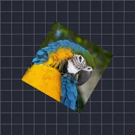

スピン

レイヤーを一定速度で回転させます。0未満では逆方向に回転します。
SpinはレイヤーをRPM（1分あたりの回転数）でぐるぐる回します。60で1秒に1回転、マイナスにすると逆方向に回ります。読み込み中のホイールやファン、レコードなどに便利です。
設定
| 設定項目 | 種類 | 範囲 | デフォルト |
|---|---|---|---|
| RPM | 数値 | -3600〜3600 | 60 |

レイヤーを一定速度で回転させます。0未満では逆方向に回転します。
SpinはレイヤーをRPM（1分あたりの回転数）でぐるぐる回します。60で1秒に1回転、マイナスにすると逆方向に回ります。読み込み中のホイールやファン、レコードなどに便利です。
| 設定項目 | 種類 | 範囲 | デフォルト |
|---|---|---|---|
| RPM | 数値 | -3600〜3600 | 60 |